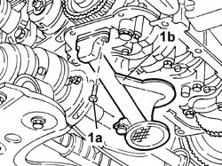
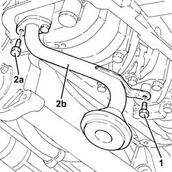

1084B26 emgine oil intake duct - r r
- Path
- Procedures > 10 ENGINE > 1084 ENGINE LUBRICATION SYSTEM > 1084B engine oil lubrication circuit > 1084B26 emgine oil intake duct - r r
- Kind
- repair procedure (removal / refitting; the operation number is the code)
- Applies to
- engines: 1.6 TS , 1.8 TS, 2.0 JTS, 1.9 JTD 8v , 1.9 JTD 16v, 2.0 JTS, 2.4 JTD 10v, 2.4 JTD 20v; all production periods
- Interactive page
- https://sloeber94.github.io/elrnDB-a156/en/#/3237707
Applies to: engines: 1.6 TS , 1.8 TS; all production periods
 Removing
Removing
 Refitting
Refitting7055B54 under-engine guard - r r
Applies to: all engines; all production periods
1092G10 single engine belt r r
1092A10 Crankshaft services PULLEY - R.R.
1092G20 engine component single belt fixed tensioner - one - r + r
Applies to: engines: 1.6 TS , 1.8 TS; all production periods
1020A20 crank case oil sump - r + r clean seals for sealant application
1. Unscrew fixing screws (1a) and remove engine oil intake horn (1b) and its gasket.

Applies to: engines: 1.6 TS , 1.8 TS; all production periods
Refitting
RemovingFit engine oil intake horn and put its gasket between.
1020A20 crank case oil sump - r + r clean seals for sealant application
Applies to: all engines; all production periods
1032D12 timing system protective cover(s) - r + r
1092G20 engine component single belt fixed tensioner - one - r + r
Applies to: engines: 1.6 TS , 1.8 TS; all production periods
1008A44 rear rigid mount - r r
Applies to: engines: 2.0 JTS, 2.0 JTS; all production periods
Removing
RefittingPosition the vehicle on the ramp.
Ensure that the ignition key is in the OFF position, then disconnect the negative battery terminal.
 | Name | Connector |
|---|---|---|
- | Battery |
Drain the air conditioner coolant circuit 5040A10 Air conditioning refrigerant CIRCUIT - Draining and Refilling .
Proceed with removal 4450B04 right front wheel r r .
Proceed with removal 7055B54 under-engine guard - r r .
Proceed with removal 5040A20 air conditioner compressor - r+r - includes fluid level check and top up if necessary .
Proceed with removal 5040A26 compressor mount - r r .
Proceed with removal 1016A40 ignition coil cover on cylinder head- r+r .
Proceed with removal 1076A48 catalytic converter heat shield - r r .
Proceed with removal 1080B62 catalytic converter - r + r .
Proceed with removal 1020A20 crank case oil sump - r + r clean seals for sealant application .
1. Undo the bolt securing the engine oil intake to the main bearing cap.
2. Undo the bolts (2a) and remove the engine oil inlet (2b) and its gasket.

Applies to: engines: 2.0 JTS, 2.0 JTS; all production periods
Refitting
RemovingPlace the engine oil inlet, complete with gasket, back in its housing and secure it using the bolts.
Tighten the engine oil air intake bolt to the main bearing cap.
Proceed with refitting 1020A20 crank case oil sump - r + r clean seals for sealant application .
Proceed with refitting 1080B62 catalytic converter - r + r .
Proceed with refitting 1076A48 catalytic converter heat shield - r r .
Proceed with refitting 1016A40 ignition coil cover on cylinder head- r+r .
Proceed with refitting 5040A26 compressor mount - r r .
Proceed with refitting 5040A20 air conditioner compressor - r+r - includes fluid level check and top up if necessary .
Proceed with refitting 7055B54 under-engine guard - r r .
Proceed with refitting 4450B04 right front wheel r r .
Fill the air conditioner coolant circuit 5040A10 Air conditioning refrigerant CIRCUIT - Draining and Refilling .
Connect the negative (-) battery terminal.
Remove the car from the ramps.
Applies to: engines: 1.9 JTD 8v , 2.4 JTD 10v; all production periods
1020A20 crank case oil sump - r + r clean seals for sealant application
Applies to: engines: 1.9 JTD 16v; all production periods
Removing
RefittingProceed with removal 1016A10 sound-proofing cover - r + r .
Proceed with removal 7055B54 under-engine guard - r r .
Proceed with removal 1084A16 oil dip stick pipe - r r .
Proceed with removal 1020A20 crank case oil sump - r + r clean seals for sealant application .
Proceed with removal 1084B28 engine oil intake pump - r + r with crankcase sump removed .
Applies to: engines: 1.9 JTD 16v; all production periods
Refitting
RemovingProceed with refitting 1084B28 engine oil intake pump - r + r with crankcase sump removed .
Proceed with refitting 1020A20 crank case oil sump - r + r clean seals for sealant application .
Proceed with refitting 1084A16 oil dip stick pipe - r r .
Refill the engine oil lubrication system - 0010T11 engine oil check level and top up .
Proceed with refitting 7055B54 under-engine guard - r r .
Proceed with refitting 1016A10 sound-proofing cover - r + r .
Applies to: engines: 2.4 JTD 20v; all production periods
Removing
RefittingProceed with removal 1016A10 sound-proofing cover - r + r .
Proceed with removal 7055B54 under-engine guard - r r .
Proceed with removal 1076B50 exhaust pipe attachment to engine - r + r .
Proceed with removal 1084A16 oil dip stick pipe - r r .
Proceed with removal 1020A20 crank case oil sump - r + r clean seals for sealant application .
Applies to: engines: 2.4 JTD 20v; all production periods
Refitting
RemovingProceed with removal 1020A20 crank case oil sump - r + r clean seals for sealant application .
Proceed with removal 1084A16 oil dip stick pipe - r r .
Proceed with removal 1076B50 exhaust pipe attachment to engine - r + r .
Refill the engine oil lubrication system - 0010T11 engine oil check level and top up .
Proceed with refitting 7055B54 under-engine guard - r r .
Proceed with refitting 1016A10 sound-proofing cover - r + r .
Topics linked from this page (19)
- 1008A44 rear rigid mount - r r
- 1016A10 sound-proofing cover - r + r
- 1016A40 ignition coil cover on cylinder head- r+r
- 1020A20 crank case oil sump - r + r clean seals for sealant application
- 1032D12 timing system protective cover(s) - r + r
- 1076A48 catalytic converter heat shield - r r
- 1076B50 exhaust pipe attachment to engine - r + r
- 1080B62 catalytic converter - r + r
- 1084A16 oil dip stick pipe - r r
- 1084B28 engine oil intake pump - r + r with crankcase sump removed
- 1092A10 Crankshaft services PULLEY - R.R.
- 1092G10 single engine belt r r
- 1092G20 engine component single belt fixed tensioner - one - r + r
- 4450B04 right front wheel r r
- 5040A10 Air conditioning refrigerant CIRCUIT - Draining and Refilling
- 5040A20 air conditioner compressor - r+r - includes fluid level check and top up if necessary
- 5040A26 compressor mount - r r
- 7055B54 under-engine guard - r r
- A1B Battery ( BATTERY NEGATIVE )